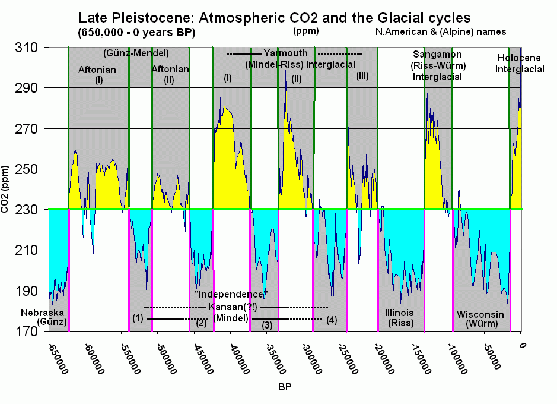

Présentation
Bonjour, je m'appelle Linao HUANG, je suis étudiante de L1 géographie ( 2020-2021 ) à l'université d'Avignon.
contact
Introduction
Ces dernières années, nous pouvons clairement ressentir l'augmentation significative de la température. Nous avons eu l'été le plus chaud de l'histoire en 2020. Nous savons tous qu'il s'agit d'un réchauffement climatique. Quelles sont les causes et les conséquences du réchauffement climatique ? La situation va-elle s'améliorer à l'avenir dans le cadre de cette tendance? Que devons-nous faire pour faire face au changement climatique?
Trump : it will start getting cooler
c'est vrai ?

L'importance de La Niña et El Niño
L'effect La Niña et El Niño
Des phénomènes océaniques à grand échelles El Niño, et son pendant La Niña sont des phénomènes océaniques à grande échelle du Pacifique équatorial, affectant le régime des vents, la température de la mer et les précipitations. El Niño et La Niña correspondent aux deux phases opposées du phénomène couplé océan/atmosphère appelé ENSO (El Niño / Southern Oscillation).
En temps normal
La Niña : le change climatique réduit anormal régulier
EI Niño : le change climatique augmente anormal régulier
<a href='#'><img alt='Cycles d'épisodes phénomène El Niño/La Niña (1900-2020) ' src='https://public.tableau.com/static/images/Ni/NinoNina/Feuille1/1_rss.png' style='border: none' /></a>
Le réchauffement planétaire est cyclique, mais il y a une hausse très élevée et rapide depuis 1958 jusqu'à aujourd'hui.
<a href='#'><img alt='Anomalie de température moyenne (1900-2020) ' src='https://public.tableau.com/static/images/cl/climat_16212487150670/C/1_rss.png' style='border: none' /></a>
Les causes du réchauffement climatique
Les gaz de effet de serre dans l'atmosphère existent et augmentent rapidement depuis 1958 jusqu'a aujourd'hui.
<a href='#'><img alt=' ' src='https://public.tableau.com/static/images/Cy/Cycles_GES/Evolutiondepuis800kyrCH4CO2NO2Sealevel_Temp/1_rss.png' style='border: none' /></a>
Conséquences du réchauffement climatique
Le réchauffement climatique a provoqué de nombreuses catastrophes naturelles et entraîné de graves conséquences sur la vie humaine.
<a href='#'><img alt='Évolution du nombre de catastrophes liée au climat (1900-2020) ' src='https://public.tableau.com/static/images/no/nombredecatastrophe/Feuille12/1_rss.png' style='border: none' /></a>
Elevation du niveau de la mer
<a href='#'><img alt=' ' src='https://public.tableau.com/static/images/Cy/Cycles_sealevel/Sealevel/1_rss.png' style='border: none' /></a>
îles fortement touchées par l'élévation du niveau de la mer : Kiribati
Demandes d’asile liées au changement climatique : une première pour le Comité des droits de l’homme de l’ONU
Les Etats ne peuvent pas expulser des individus qui font face à des conditions induites par le changement climatique qui violent le droit à la vie, a estimé mardi le Comité des droits de l’homme de l’ONU, soulignant qu’il s’agit de sa première décision sur une plainte d’un individu demandant l’asile contre les effets du changement climatique. ( 21 janvier 2020 ONU info )
Feux de forêt
Les feux de brousse australiens de 2019 à 2020 se réfèrent généralement à une série de feux de forêt qui ont commencé à brûler en Australie en septembre 2019 en raison du temps chaud et sec.Au 8 janvier 2020, les feux de forêt avaient brûlé plus de 5 900 bâtiments et tué 34 autres personnes (dont 8 Volontaires des services d'incendie en Nouvelle - Galles du Sud et à Victoria).Selon les estimations de l'Université McGill, des milliards d'animaux, y compris des chauves - souris, des amphibiens et des insectes, sont morts dans l'incendie.
La majorité des scientifiques s'accordent sur le fait que l'accroissement des incendies en Australie est lié au réchauffement climatique, lui-même lié aux activités humaines et accentuant les incendies. Au vu des historiques de températures, les scientifiques sont formels : le changement climatique accentue gravement les feux qui ont démarré dans le pays en septembre.En 2017, le Bureau météorologique d'Australie avait déjà mis en garde contre une augmentation dangereuse des températures dans le pays ces dernières années, indiquant que « L'atmosphère australienne s'est réchauffée de plus d'un degré depuis 1910, menant à une augmentation de la fréquence des événements de chaleur extrême. Les pluies d'avril à octobre ont diminué de 11% dans le sud-est de l'Australie (la partie la plus violemment touchée par les incendies aujourd'hui, NDLR). Il y a eu une augmentation significative de la saison des feux dans de nombreuses parties du pays. ». Le site internet du Bureau de Météorologie d'Australie affirme que « le changement climatique influence la fréquence et la sévérité des conditions de feux de forêt dangereux ». Un rapport sur le climat de 2018 de l’Organisme Gouvernemental pour la Recherche Scientifique (CSIRO) fait le lien entre l’augmentation des feux, leur durée, et le changement climatique : «Le risque de feux de forêt a augmenté ces dernières années dans de nombreuses régions d’Australie, surtout dans le sud et l’est. Il y a eu, en même temps, un accroissement de la durée de la saison des feux. Le changement climatique, y compris les températures en hausse, contribue à ces changements.» Dans les décennies à venir, les projections climatiques nationales prévoient ainsi «une augmentation du nombre de jours, avec un fort risque de feux et une saison des feux plus longue en Australie méridionale et orientale».
Des autres conséquences principales
Fonte des glaciers
Le Parc national des glaciers du Montana a perdu une grande partie de sa beauté en raison de la hausse des températures de surface.
Vague de chaleur
La vague de chaleur meurtrière qui a balayé l'Europe a tué environ 35 000 personnes en 2003.
Tempêtes et inondations
Au cours des dernières années, les États - Unis et la Grande - Bretagne ont été frappés par des tempêtes et des inondations très violentes qui ont fait de nombreux morts et causé des centaines de millions de dollars de dégâts matériels.
Sécheresse
À mesure que le climat se réchauffe, les experts estiment que la sécheresse pourrait augmenter d'au moins 66%, ce qui réduirait l'approvisionnement en eau et réduirait la qualité de la production végétale.Cela met en danger la production et l'approvisionnement alimentaires dans le monde entier, et la population est de plus en plus exposée à la menace de la faim.
Maladie
Avec les inondations et la sécheresse, le temps chaud a créé un excellent environnement de croissance pour le virus. Les moustiques, les poux Plates, les souris et d'autres organismes porteurs de maladies deviennent de plus en plus prospères.L'Organisation mondiale de la santé affirme que les virus nouveaux ou en rechute se propagent rapidement, qu'ils peuvent survivre dans des pays différents et que certaines maladies tropicales peuvent se produire dans des endroits froids.
Conclusion
Il y a de grands cycles sur terre qui réchauffent le climat à un certain stade, mais de 1958 à aujourd'hui, il a montré une tendance rapide et agressive, sans précédent dans l'histoire.Les données montrent qu'il s'agit là d'un lien important avec les émissions excessives de gaz à effet de serre, comme le dioxyde de carbone.Le moyen le plus efficace d'atténuer le réchauffement climatique est de limiter les activités humaines et de réduire les émissions de carbone.
Contactez-moi
Contact d'Avignon Université
04 90 16 25 00